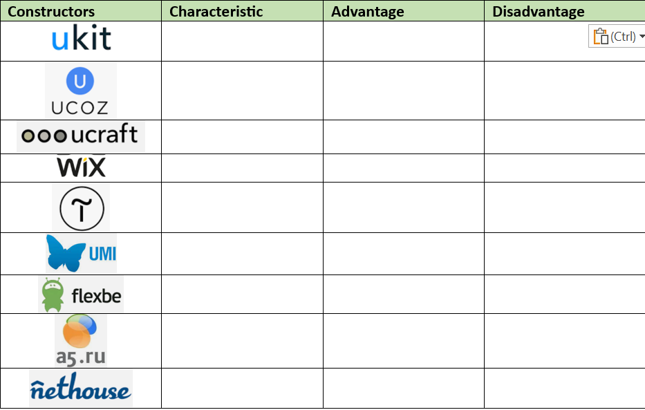

: In this panel you will find tons of elements to add to your site. Use the tabs to navigate between the types of elements.
: In this panel you will find tons of elements to add to your site. Use the tabs to navigate between the types of elements. : Use this panel to add sections to your pages. There are a variety of pre-made designs available, or you can add a blank section to start from scratch.
: Use this panel to add sections to your pages. There are a variety of pre-made designs available, or you can add a blank section to start from scratch. : From here you can add, delete and manage your site's pages.
: From here you can add, delete and manage your site's pages. : Manage your site's colors, text themes, page backgrounds and transitions.
: Manage your site's colors, text themes, page backgrounds and transitions.  : Browse hundreds of apps in the Wix App Market and find the ones that suit your needs.
: Browse hundreds of apps in the Wix App Market and find the ones that suit your needs. : Add media files to your Media Manager or purchase professional images and videos to use on your site.
: Add media files to your Media Manager or purchase professional images and videos to use on your site.


 at the top of the Editor.
at the top of the Editor.
 on the top right of the Editor.
on the top right of the Editor.
 at the top of the Editor.
at the top of the Editor.  at the bottom left of the Editor.
at the bottom left of the Editor.


2. Creating WIX web sites
Task 1.Thoroughly familiarize yourself with the tools of the Wicks website
Task 2. Divide into groups and use additional sources of information to analyze the following site builders and compare their advantages and disadvantages.
